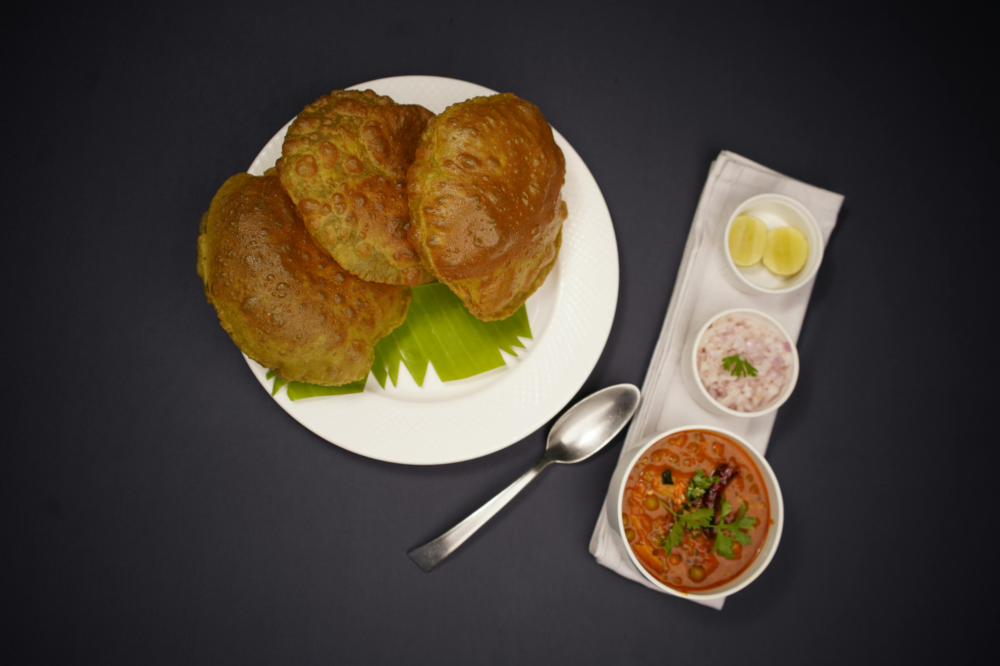

Home
Chole Bhature

Description
Indulge in the ultimate North Indian comfort food: Chole Bhature. This world-famous combination features a deeply spiced, tangy chickpea curry (chole) paired with a spectacular, balloon-puffed, deep-fried sourdough bread (bhature). The rich curry is slow-cooked with a special blend of aromatic spices, tomatoes, and ginger, while the crisp yet fluffy bread melts in your mouth. Served piping hot with pickled onions, green chillies, and a wedge of lemon, it is a celebratory meal perfect for a hearty weekend brunch.
Ingredients
For the Chole (Spicy Chickpea Curry):
- Raw Chickpeas (Kabuli Chana): 1 cup (soaked in water overnight for 8 hours)
- Black Tea Bag: 1 (or dried amla, to give the authentic dark color)
- Onions: 2 medium, finely chopped
- Tomatoes: 2 large, pureed
- Ginger-Garlic Paste: 1 tablespoon
- Green Chillies: 2, slit lengthwise
- Chole Masala Powder: 2 tablespoons
- Turmeric Powder: ½ teaspoon
- Kashmiri Red Chilli Powder: 1 teaspoon
- Amchur (Dry Mango Powder): 1 teaspoon (for tanginess)
- Kasuri Methi (Dried Fenugreek Leaves): 1 teaspoon
- Baking Soda: ¼ teaspoon (added while boiling chickpeas)
- Oil or Ghee: 3 tablespoons
- Salt: To taste
For the Bhature (Puffed Fried Bread):
- All-Purpose Flour (Maida): 2 cups
- Semolina (Sooji): 2 tablespoons (adds a touch of crispness)
- Yogurt (Dahi): ¼ cup (helps with fermentation)
- Baking Powder: ½ teaspoon
- Baking Soda: A pinch
- Sugar: 1 teaspoon
- Oil: 2 teaspoons (plus more for deep frying)
- Warm Water: As needed to knead the dough
Steps
Make the Bhature Dough:
- Mix: Combine all-purpose flour, semolina, baking powder, baking soda, sugar, and a pinch of salt in a wide mixing bowl.
- Knead: Add the yogurt and 2 teaspoons of oil. Gradually pour in warm water and knead into a smooth, soft, and elastic dough.
- Rest: Grease the dough surface with a few drops of oil. Cover it tightly with a damp cloth and let it rest in a warm place for 2 to 3 hours to ferment.
Cook the Chole Curry:
- Boil: Drain the soaked chickpeas. Pressure cook them with 3 cups of water, the tea bag, baking soda, and 1 teaspoon of salt for 4 to 5 whistles until fully soft. Discard the tea bag.
- Masala Base: Heat oil or ghee in a deep pan. Sauté the chopped onions until they turn golden brown. Stir in the ginger-garlic paste and slit green chillies, frying for 1 minute.
- Spices: Add the tomato puree. Cook until the oil separates from the sides. Stir in the chole masala, turmeric, red chilli powder, and amchur powder.
- Simmer: Pour the boiled chickpeas along with their cooking water into the pan. Mash a few chickpeas with your spoon to thicken the gravy. Simmer on low heat for 15 minutes.
- Finish: Crush the kasuri methi between your palms and sprinkle it over the curry. Stir well and remove from heat.
Fry the Bhature:
- Divide: Punch the rested dough down and divide it into equal, lemon-sized smooth balls.
- Roll: Heat ample oil for deep frying in a deep wok (kadai). Grease your rolling pin with oil and roll a dough ball out into a medium-sized oval or circle. Do not use dry flour.
- Fry: Ensure the oil is smoking hot. Slide the rolled bhatura gently into the oil. Press it down lightly with a slotted spoon in a circular motion until it puffs up like a balloon.
- Flip: Flip and fry the other side until it turns an even, light golden colour. Drain on paper towels.
- Serve: Serve immediately while hot and puffed alongside the dark spicy chole, lemon wedges, and pickled onions.